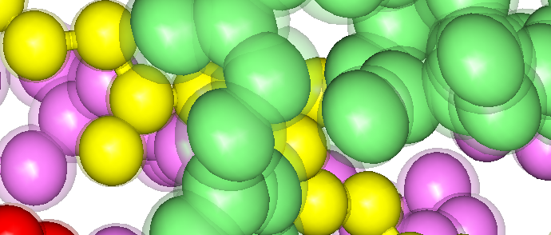
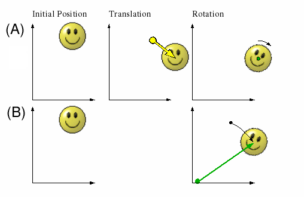
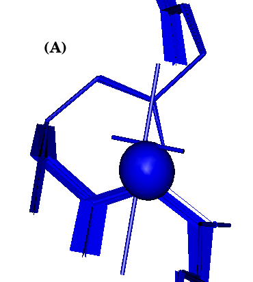
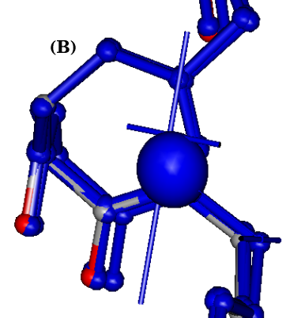
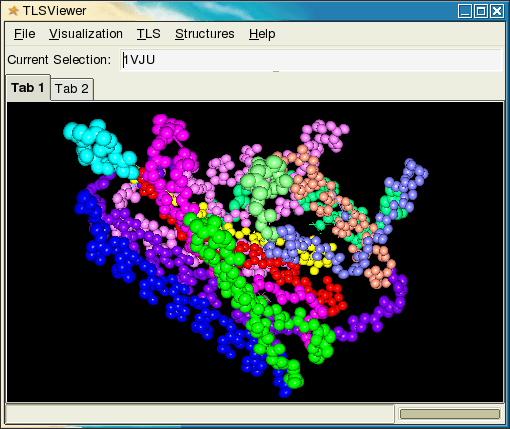

|  |
|---|
| Figure 1: TLSView visualization of protein backbone atoms using thermal ellipsoids contoured at the 50% isoprobability level. Atoms from several independent TLS groups are shown in different colors. This visualization uses two ellipsoids per atom. One opaque ellipsoid is derived from the reduced translation tensor Tr, the minimum translational component of the TLS predicted anisotropic ADP for the atom. The larger transparent ellipsoid is derived from the full TLS predicted ADP for the atom, UTLS, which includes the additional displacement from three TLS screw motions. |
The TLSView molecular viewer specializes in the visualization of TLS rigid body displacements of macromolecular structures. It uses OpenGL for interactive graphics rendering, and supports most of the visualization found it other programs. It also introduces a new screw-displacement traced surface, and computer animation of conventional visualizations according to rigid body displacement parameters. The TLS model is a more complex than a simple Euclidean rigid body displacement, and a cursory understanding of the theory behind the TLS model is required to understand the visualizations available in TLSView. For those in a hurry, it may be enough to know that the standard interpretation of the displacements parameterized in a TLS model can be reduced to six Euclidean displacements: 3 orthogonal translational displacements, and three screw displacements about non-intersecting orthogonal axes. This is the canonical interpretation of TLS displacement, and it is used by TLSView to animate the displacement of the atoms in a TLS group.
Here are links to well-written introductions of Chasles' Theorem, tensors, and the multivariate Gaussian distribution. They are subjects used in the formulation of the TLS model.
In Euclidean space, a rigid body undergoing displacement is fully described by a 3x3 rotation matrix R and a 3x1 translation vector t. The displacement can be simplified further and described by a simple screw displacement(see Chasles' Theorem): a rotation about a 3x1 vector up to given rotational magnitude while being translated along the vector by a magnitude proportional to the rotation(screw pitch). Keep in mind the screw displacement takes a rigid body from one orientation to another, but the literal screw displacement path may not be the path followed by rigid body to get to the second orientation. Even with this caveat the screw displacement is a useful concept when visualizing the rigid body displacement of a structure in a macromolecular viewer, because the magnitude of the displacements are small compared to the size of the rigid body.
Individual anisotropic ADPs give the mean square deviation(MSD) of a atom from its mean position as measured over time and crystal lattice position during a xray experiment. The TLS rigid body model predicts the anisotropic ADPs for atoms based on their vector position relative the the TLS tensor origin. The TLS model does this assuming the atoms are all points on a rigid body undergoing displacement. This is not a Euclidean rigid body displacement, because ADPs are the MSD magnitudes of the atom's position within a Gaussian probablility distribution. The re-formulation of the Euclidean rigid body displacement to predict anisotropic ADPs results in a more complex description of rigid body motion requiring 20 unique parameters arranged into three 3x3 tensors: T, L, and S. The T tensor, or translation tensor, is a symmetric 3x3 tensor(six unique parameters) with elements given in units of Angstroms2 just like the individual atomic anisotropic displacement tensor U. The T tensor is the anisotropic translational displacement common to all atoms in the rigid body group. The L, or libration(rotation) tensor, is also a symmetric 3x3 tensor with elements in units of Radians2, but commonly converted to Degrees2 when reported. The libration tensor describes rotational component of the rigid body displacement. The T and L tensors can also be thought of as Gaussian variance-covariance tensors, which makes intuitive sense since the anisotropic ADP tensors UTLS the TLS model predicts are also Gaussian variance-covariance tensors. The S tensor is not usually symmetric, and isn't as easy to interpret directly like the L and T tensors. It exists in the TLS model to account for a rotation-translation correlation which occurs when a rigid body undergoes rotation about three orthogonal rotation axes which do not intersect at a common point.
Given the TLS tensors and their origin, a TLS predicted anisotropic ADP may be calculated for any atom using its position relative to the TLS origin by the set of linear equations given in Table 1.
| UTLSij | Equation |
|---|---|
| UTLS11 | L22z2+ L33y2- 2L23yz+ 2S21z- 2S31y+ t11 |
| UTLS22 | L11z2+ L33x2- 2L31xz- 2S12z+ 2S32x+ t22 |
| UTLS33 | L11y2+ L22x2- 2L12xy- 2S23x+ 2S13y+ t33 |
| UTLS12 | -L33xy+ L23yxz- L13yz- L12z2- S11z+ S22z+ S31x- S32y+ t12 |
| UTLS13 | -L22xz+ L23yx- L13y2+ L12yz+ S11y- S33y+ S23z- S21x+ t13 |
| UTLS23 | -L11yz- L23x2+ L13xy+ L12xz- S22x+ S33x+ S12y- S13z+ t23 |
These equations can also be used to fit TLS tensors to the experimental individual ADPs of a group of atoms in a crystal structure. This requires at least 6 atoms with anisotropic ADPs, or 21 atoms with isotropic ADPs. Isotropic ADPs must be converted from their typical B values to equivalent UISO tensors. Fitting a group of residues in a macromolecule often involves enough atoms so that the TLS parameters are overdetermined. When this is the case, the TLS calculated UTLS tensors can be compared with the experimental U tensors to quantify how well the model fit. TLSView reports two ADP comparison functions: R, and dP2.
U, T, and L are all trivariate Gaussian variance-covariance tensors. Since they are symmetric, each has six independent parameters. Three parameters are the princpal MSDs along orthogonal axes, and three are the rotational orientation of the principal axes with respect to the current coordinate system. When a tensor is rotated to its principal axes, the off-diagonal terms become zero and the principal axis MSDs can be read from the diagonal elements. The orientation of the principal axes can be found by calculating the tensor eigenvectors. Most programming routines for calculating eigenvectors return the normalized eigenvalue-eigenvector pairs. The eigenvalue is the independent MSD in the direction of the eigenvector. Table 2 gives a overview of some useful properties common to all trivariate Gaussian variance-covariance tensors.
| Calculation | Description |
|---|---|
| s11+s22+s33 | Trace of S. The trace is always equal to the sum of three principal MSDs, and is invariant under rotation. |
| 1/3*(s11+s22+s33) | The isotropic approximation of S. |
| eigenvalues(S) | The MSD magnitues of the principal axes of S. |
| eigenvectors(S) | The principal axes of S. |
|
ntSn sqrt(ntSn) |
The MSD/RMSD(root mean square deviation) magnitude in the dirction of unit vector n. The anisotropic ADP visualization often refered to as "peanuts" is generated by the RMSD surface of a atom's U tensor. |
| C*sqrt(ntS-1n) | The distance to the isoprobability ellipsoid surface of S in the direction of unit vector n. The critical value C determines the amount of probability enclosed by the ellipsoid. The value of C is obtained by numerical integration of the trivariate Gaussian, but is constant for all trivariate Gaussians, so the values of C are often just looked up in a table. |
|  |
|---|
| Figure 2: Two equivalent displacements of a rigid body. (A) The rigid body is displaced by a translation followed by by a rotation about its centroid. (B) The same displacement reduced to a single rotation about a unique axis. |
The reduction of a given TLS model to three translational displacements and three screw displacements is accomplished by a series of tensor transformations. The parameters from the L and S tensor are combined to calculate the screw displacements, and the T tensor is reduced to a new translation tensor Tr which is a absolute minimum translational component for the TLS displacement. Put another way, this reduction maximizes the displacement contribution from the screw axes while minimizing the displacment contribution from pure translation. Figure 2 demonstrates this type of reduction in two dimentions, where it is possible to completely eliminate the translational displacement. This is accomplished by shifting the object rotation origin to a unique point where the rotation alone will complete the displacement. Attempting this reduction on a displaced object in three dimentions leads to the result of Chastles' thereom, because a rotation about a axis displaces a object in the plane perpendicular to the rotation axis, and the remaining displacement is a translation perpendicular to the plane(parallel to the rotation axis). For a TLS displacement, there is a unique tensor origin which minimized the trace of T, and also makes the S tensor symmetric. This origin is called the center of reaction, cor. The center of reaction is independent of the original tensor origin of calculation which is usually arbitrary. Once the TLS tensor origin is shifted to the cor, the Lcor and Scor tensors can be used to calculate three perpendicular non-intersecting screw displacements which reduces the trace of Tcor further, resulting in a new reduced translation tensor Tr. Table 3 gives a overview of all the the parameters involved in this reduction.
| Symbol | Parameter | Type | Units | Description |
|---|---|---|---|---|
| oci | TLS Origin of Calculations | 3x1 vector/point | A | The arbitrary origin of calculations, meaning the origin of the Tij, Lij, and Sij tensors. The positions of the atoms of a TLS group are calculated relative to this origin. |
| Uij | Anisotropic ADP Tensor | 3x3 symmetric tensor | A2 | The anisotropic form of a individual atomic displacement parameter(ADP). |
| UTLSij | TLS Calculated Anisotropic ADP Tensor | 3x3 symmetric tensor | A2 | The anisotropic ADP calculated from a TLS model. |
| Tij | Translation Tensor | 3x3 symmetric tensor | A2 | The translation tensor of the TLS model. This tensor describes the anisotropic translational component of the rigid body displacement the same way the anisotropic atomic displacement parameters in Uij describes the translation displacement for a single atom. |
| Lij | Libration (Rotation) Tensor | 3x3 symmetric tensor | RAD2 or DEG2 | The libration tensor of the TLS model. This describes the rotational component of the rigid body displacement. |
| Sij | Skew/Screw Tensor | 3x3 non-symmetric tensor | (A*RAD) or (A*DEG) | The skew tensor of the TLS model. This describes rotation-translation correlation which happens when the rigid body is rotated about three orthogonal rotation axes which do not intersect at a single point. The skew tensor is generally non-symmetric, but through a transformation of the TLS model origin a unique origin may be found where it becomes symmetric. This origin is called the center of reaction. |
| cori | Center of Reaction | 3x1 vector/point | A | The center of reaction is a special origin which can be calculated using the Tij Lij, Sij, and oci parameters of a existing TLS model. The center of reaction is independent of the TLS model's origin of calculations, and once it has been calculated, the TLS tensors can be transformed to use the center of reaction as the origin of calculations for a new TLS model which predicts the same anisotropic ADPs as the TLS model it was derived from. |
| Tcorij | Translation Tensor at the Center of Reaction | 3x3 symmetric tensor | A2 | The translation tensor after the origin shift to the center of reaction. The shift to the center of reaction minimizes the trace of the translation tensor. |
| Trij | Reduced Translation Tensor | 3x3 symmetric tensor | A2 | This is what is left of the translation tensor after the displacements of the Lcor and Scor have been reduced to three non-intersecting screw axes. |
| Lcorij | Libration (Rotation) Tensor at the Center of Reaction | 3x3 symmetric tensor | RAD2 or DEG2 | The libration tensor after the shift to the center of reaction. Shifting to a new origin has no effect on the components of the libration tensor. |
| Scorij | Skew/Screw Tensor | 3x3 symmetric tensor | (A*RAD) or (A*DEG) | The skew tensor after the shift to the center of reaction. The center of reaction is the only possible origin which can make the skew tensor symmetric, and is therefore a unique origin for a given TLS model. |
| rholi | Position of Screw Axis l With Respect to cor | 3x1 vector | A | Three vectors l={1,2,3} corresponding to the three eigenvectors of Lcor. The eigenvectors displaced from the cor by rho are the position and orientation of the TLS canonical screw axes. |
| pitchl | Pitch of Screw Axis l | Real Number | (A/RAD) or (A/DEG) | Three screw pitches l={1,2,3} corresponding to the screw axes parallel to the three eigenvectors of Lcor. |
|  |  |
|---|---|
| Figure 3: Two TLSView visualizations of a portion of a protein backbone with TLS screw displacement. The thermal ellipsoid in the foreground of the visualization is generated from Tr and located at the center of reaction. The axes are the TLS screw displacement axes. (A) Shows the three screw trajectory surfaces. (B) Shows a still image captured during screw displacement animation. The ball/stick visualization with normal atom colors is static, and three blue copies are undergoing screw displacement. | |
One option for visualizing a TLS model is to use the TLS calculated anisotropic ADPs to draw thermal ellipsoids or thermal axes. Programs such as Raster3D and Ortep already do this. The CCP4 project also has a program called TLSANL which will produce Molscript output to draw the non-intersecting screw axes as solid rods with a length proportional to the MSD rotational magnitude. TLSView implements both of these visualizations with additional detail, and introduces two new visualizations for the screw displacements: a surface tracing the trajectory of the TLS group atoms, and oscillating computer animation of any of the supported visualizations. These visualizations are shown in Figure 3. The rotation of each screw displacement is calculated from the MSD and the trivariate Gaussian critical value table. For the screw displacement surface visualization, the surface is drawn up to a displacement magnitude containing a percentage of the total distribution. TLSView has one centeral control for selecting the isosurface probability magnitude so that all ellipsoids, surfaces, and animations will be drawn in proper proportions.
Atomic thermal ellipsoids may be drawn using a three different ADP tensors: U or Uiso from the structure file, Utls, and Tr. Figure 1 shows a UTLS and Tr ellipsoid for each atom. The UTLS ellipsoid has been set to be transparent, while Tr is opaque. If the TLS model was fit to the experimental ADPs in the structure file, it may be interesting to render those ellipsoids too for a visual comparison of how well the TLS ADPs match the experimental ones.
|  |
|---|
| Figure 2: TLSView main window with two tab windows displaying structure 1VJU in Tab 1. The structure is split into 12 TLS groups, each with its own color. The UTLS thermal ellipsoids of the protein backbone atoms are shown at 50% probability. |
The user interface of TLSView is programed using the GTK+ user interface toolkit, embedding a OpenGL rendering window using GtkGLExt widget. It supports tabbed viewing, multiple windows, and loading multiple structures. Commands are available through the menu bar as follows:
| Menu/Submenu | Command Description |
|---|---|
| File/* | Commands to open/close new windows, tabls, and open structures files in PDB or mmCIF fomat. |
| Visualization/Properties Browser... | Opens the visualization properties browser dialog for the visualization Tab currently in view. |
| TLS/TLS Analysis | Opens the TLS Analysis dialog for the macromolecular structure selected in the Current Selection bar. |
| Structures/* | Change the cureently selected structure. |
| Help/About... | Opens one mostly unhelpful dialog. |
The controls for structure navigation mimic PyMol implementing a virtual trackball and clipping plane adjustment. All three mouse buttons and the SHIFT key are used:
| Mouse Button | No Key | Depressing SHIFT |
|---|---|---|
| Left | XY Rotation | No Change |
| Middle | XY Translation | No Change |
| Right | Zoom In and Out | Move Near and Far Clipping Plane |
The Visualization Properties Dialog is used to modify the default visualization settings in TLSView. Each tab window has its own Visualization Properties Dialog, and all the structures loaded in the tab window are arranged hierarchically by structure and chain in the left hand pane of the dialog. The right hand pane displays panels containing settings for the currently selected visualization object, and any changes made to the visualization settings to not take effect until the Apply button has been depressed. Most users familiar with molecular viewers will recognize the various options for visualizing structures, and most of the options work as expected. Colors are selected through drop-down boxes which provide a menu of solid colors or color functions. Depending on the object, the list of colors might be quite small, but the user can always enter a custom color using a floating point RGB triplet, separated by commas. The range for each RGB value is between 0.0-1.0. When the selection Random is available in the menu, selecting it generates a single random RGB triplet which is displayed in the color selection entry box once applied.
The hierarchical arrangement of graphics objects allows parent objects to control the settings in their child objects. This is the case for the TLS Chain object, which collects together the individual TLS groups defined in the chain. Most options selected in the TLS Chain property panels are propagated to the TLS Group objects they contain, but properties of TLS Group objects can also be set individually.
Last modified by Jay Painter